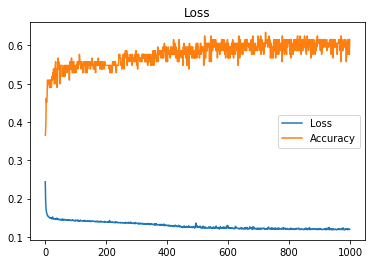

Epoch 766/1000
- 6s - loss: 0.1235 - accuracy: 0.6154
Epoch 767/1000
- 6s - loss: 0.1227 - accuracy: 0.5769
Epoch 768/1000
- 6s - loss: 0.1205 - accuracy: 0.6154
Epoch 769/1000
- 6s - loss: 0.1213 - accuracy: 0.6058
Epoch 770/1000
- 6s - loss: 0.1225 - accuracy: 0.5962
Epoch 771/1000
- 6s - loss: 0.1215 - accuracy: 0.6058
Epoch 772/1000
- 6s - loss: 0.1212 - accuracy: 0.5865
Epoch 773/1000
- 6s - loss: 0.1207 - accuracy: 0.5962
Epoch 774/1000
- 6s - loss: 0.1202 - accuracy: 0.5962
Epoch 775/1000
- 6s - loss: 0.1206 - accuracy: 0.6058
Epoch 776/1000
- 6s - loss: 0.1208 - accuracy: 0.5962
Epoch 777/1000
- 6s - loss: 0.1223 - accuracy: 0.6058
Epoch 778/1000
- 6s - loss: 0.1228 - accuracy: 0.5577
Epoch 779/1000
- 6s - loss: 0.1208 - accuracy: 0.6250
Epoch 780/1000
- 6s - loss: 0.1211 - accuracy: 0.6058
Epoch 781/1000
- 6s - loss: 0.1208 - accuracy: 0.5962
Epoch 782/1000
- 6s - loss: 0.1237 - accuracy: 0.6058
Epoch 783/1000
- 6s - loss: 0.1208 - accuracy: 0.6154
Epoch 784/1000
- 6s - loss: 0.1226 - accuracy: 0.5865
Epoch 785/1000
- 6s - loss: 0.1236 - accuracy: 0.6058
Epoch 786/1000
- 6s - loss: 0.1218 - accuracy: 0.5769
Epoch 787/1000
- 6s - loss: 0.1211 - accuracy: 0.6154
Epoch 788/1000
- 6s - loss: 0.1211 - accuracy: 0.6058
Epoch 789/1000
- 6s - loss: 0.1223 - accuracy: 0.5865
Epoch 790/1000
- 6s - loss: 0.1222 - accuracy: 0.5865
Epoch 791/1000
- 6s - loss: 0.1196 - accuracy: 0.6154
Epoch 792/1000
- 6s - loss: 0.1213 - accuracy: 0.5865
Epoch 793/1000
- 6s - loss: 0.1218 - accuracy: 0.5769
Epoch 794/1000
- 6s - loss: 0.1217 - accuracy: 0.6154
Epoch 795/1000
- 6s - loss: 0.1221 - accuracy: 0.6058
Epoch 796/1000
- 6s - loss: 0.1206 - accuracy: 0.5962
Epoch 797/1000
- 6s - loss: 0.1204 - accuracy: 0.6058
Epoch 798/1000
- 6s - loss: 0.1206 - accuracy: 0.6154
Epoch 799/1000
- 6s - loss: 0.1206 - accuracy: 0.6058
Epoch 800/1000
- 6s - loss: 0.1207 - accuracy: 0.6058
Epoch 801/1000
- 6s - loss: 0.1200 - accuracy: 0.6154
Epoch 802/1000
- 6s - loss: 0.1193 - accuracy: 0.6154
Epoch 803/1000
- 6s - loss: 0.1205 - accuracy: 0.6058
Epoch 804/1000
- 6s - loss: 0.1212 - accuracy: 0.5769
Epoch 805/1000
- 6s - loss: 0.1201 - accuracy: 0.5962
Epoch 806/1000
- 6s - loss: 0.1196 - accuracy: 0.6154
Epoch 807/1000
- 6s - loss: 0.1232 - accuracy: 0.5673
Epoch 808/1000
- 6s - loss: 0.1213 - accuracy: 0.6154
Epoch 809/1000
- 6s - loss: 0.1207 - accuracy: 0.6058
Epoch 810/1000
- 6s - loss: 0.1204 - accuracy: 0.5962
Epoch 811/1000
- 6s - loss: 0.1206 - accuracy: 0.5962
Epoch 812/1000
- 6s - loss: 0.1214 - accuracy: 0.6058
Epoch 813/1000
- 6s - loss: 0.1209 - accuracy: 0.5962
Epoch 814/1000
- 6s - loss: 0.1220 - accuracy: 0.5769
Epoch 815/1000
- 6s - loss: 0.1199 - accuracy: 0.5962
Epoch 816/1000
- 6s - loss: 0.1199 - accuracy: 0.5865
Epoch 817/1000
- 6s - loss: 0.1199 - accuracy: 0.6154
Epoch 818/1000
- 6s - loss: 0.1198 - accuracy: 0.5865
Epoch 819/1000
- 6s - loss: 0.1208 - accuracy: 0.5865
Epoch 820/1000
- 6s - loss: 0.1204 - accuracy: 0.6058
Epoch 821/1000
- 6s - loss: 0.1209 - accuracy: 0.6154
Epoch 822/1000
- 6s - loss: 0.1196 - accuracy: 0.6058
Epoch 823/1000
- 6s - loss: 0.1212 - accuracy: 0.6058
Epoch 824/1000
- 6s - loss: 0.1224 - accuracy: 0.6154
Epoch 825/1000
- 6s - loss: 0.1220 - accuracy: 0.5865
Epoch 826/1000
- 6s - loss: 0.1210 - accuracy: 0.6058
Epoch 827/1000
- 6s - loss: 0.1205 - accuracy: 0.5865
Epoch 828/1000
- 6s - loss: 0.1214 - accuracy: 0.6154
Epoch 829/1000
- 6s - loss: 0.1222 - accuracy: 0.6250
Epoch 830/1000
- 6s - loss: 0.1225 - accuracy: 0.5962
Epoch 831/1000
- 6s - loss: 0.1225 - accuracy: 0.5865
Epoch 832/1000
- 6s - loss: 0.1214 - accuracy: 0.6154
Epoch 833/1000
- 6s - loss: 0.1223 - accuracy: 0.5865
Epoch 834/1000
- 6s - loss: 0.1214 - accuracy: 0.5865
Epoch 835/1000
- 6s - loss: 0.1217 - accuracy: 0.6058
Epoch 836/1000
- 6s - loss: 0.1195 - accuracy: 0.6154
Epoch 837/1000
- 6s - loss: 0.1192 - accuracy: 0.6250
Epoch 838/1000
- 6s - loss: 0.1198 - accuracy: 0.6154
Epoch 839/1000
- 6s - loss: 0.1199 - accuracy: 0.6154
Epoch 840/1000
- 6s - loss: 0.1196 - accuracy: 0.6154
Epoch 841/1000
- 6s - loss: 0.1205 - accuracy: 0.5769
Epoch 842/1000
- 6s - loss: 0.1199 - accuracy: 0.6154
Epoch 843/1000
- 6s - loss: 0.1211 - accuracy: 0.6058
Epoch 844/1000
- 6s - loss: 0.1207 - accuracy: 0.5865
Epoch 845/1000
- 6s - loss: 0.1202 - accuracy: 0.5962
Epoch 846/1000
- 6s - loss: 0.1203 - accuracy: 0.5865
Epoch 847/1000
- 6s - loss: 0.1197 - accuracy: 0.6154
Epoch 848/1000
- 6s - loss: 0.1192 - accuracy: 0.6154
Epoch 849/1000
- 6s - loss: 0.1190 - accuracy: 0.6058
Epoch 850/1000
- 6s - loss: 0.1201 - accuracy: 0.5962
Epoch 851/1000
- 6s - loss: 0.1200 - accuracy: 0.6058
Epoch 852/1000
- 6s - loss: 0.1200 - accuracy: 0.6250
Epoch 853/1000
- 6s - loss: 0.1213 - accuracy: 0.5962
Epoch 854/1000
- 6s - loss: 0.1196 - accuracy: 0.6154
Epoch 855/1000
- 6s - loss: 0.1221 - accuracy: 0.5962
Epoch 856/1000
- 6s - loss: 0.1206 - accuracy: 0.5865
Epoch 857/1000
- 6s - loss: 0.1232 - accuracy: 0.5962
Epoch 858/1000
- 6s - loss: 0.1209 - accuracy: 0.5769
Epoch 859/1000
- 6s - loss: 0.1202 - accuracy: 0.5962
Epoch 860/1000
- 6s - loss: 0.1194 - accuracy: 0.6058
Epoch 861/1000
- 6s - loss: 0.1190 - accuracy: 0.6250
Epoch 862/1000
- 6s - loss: 0.1195 - accuracy: 0.5962
Epoch 863/1000
- 6s - loss: 0.1218 - accuracy: 0.6058
Epoch 864/1000
- 6s - loss: 0.1195 - accuracy: 0.6058
Epoch 865/1000
- 6s - loss: 0.1200 - accuracy: 0.5865
Epoch 866/1000
- 6s - loss: 0.1209 - accuracy: 0.6058
Epoch 867/1000
- 6s - loss: 0.1202 - accuracy: 0.6154
Epoch 868/1000
- 6s - loss: 0.1246 - accuracy: 0.6058
Epoch 869/1000
- 6s - loss: 0.1194 - accuracy: 0.6154
Epoch 870/1000
- 6s - loss: 0.1210 - accuracy: 0.5962
Epoch 871/1000
- 6s - loss: 0.1193 - accuracy: 0.6154
Epoch 872/1000
- 6s - loss: 0.1211 - accuracy: 0.6058
Epoch 873/1000
- 6s - loss: 0.1211 - accuracy: 0.5673
Epoch 874/1000
- 6s - loss: 0.1199 - accuracy: 0.6154
Epoch 875/1000
- 6s - loss: 0.1201 - accuracy: 0.5962
Epoch 876/1000
- 6s - loss: 0.1206 - accuracy: 0.6154
Epoch 877/1000
- 6s - loss: 0.1204 - accuracy: 0.6154
Epoch 878/1000
- 6s - loss: 0.1195 - accuracy: 0.6154
Epoch 879/1000
- 6s - loss: 0.1216 - accuracy: 0.5865
Epoch 880/1000
- 6s - loss: 0.1213 - accuracy: 0.5769
Epoch 881/1000
- 6s - loss: 0.1206 - accuracy: 0.6058
Epoch 882/1000
- 6s - loss: 0.1204 - accuracy: 0.6154
Epoch 883/1000
- 6s - loss: 0.1206 - accuracy: 0.5962
Epoch 884/1000
- 6s - loss: 0.1205 - accuracy: 0.6058
Epoch 885/1000
- 6s - loss: 0.1214 - accuracy: 0.6058
Epoch 886/1000
- 6s - loss: 0.1209 - accuracy: 0.6058
Epoch 887/1000
- 6s - loss: 0.1211 - accuracy: 0.5769
Epoch 888/1000
- 6s - loss: 0.1204 - accuracy: 0.5962
Epoch 889/1000
- 6s - loss: 0.1205 - accuracy: 0.5865
Epoch 890/1000
- 6s - loss: 0.1196 - accuracy: 0.5962
Epoch 891/1000
- 6s - loss: 0.1194 - accuracy: 0.6154
Epoch 892/1000
- 6s - loss: 0.1213 - accuracy: 0.6058
Epoch 893/1000
- 6s - loss: 0.1195 - accuracy: 0.5962
Epoch 894/1000
- 6s - loss: 0.1198 - accuracy: 0.6250
Epoch 895/1000
- 6s - loss: 0.1194 - accuracy: 0.6058
Epoch 896/1000
- 6s - loss: 0.1200 - accuracy: 0.6154
Epoch 897/1000
- 6s - loss: 0.1204 - accuracy: 0.6154
Epoch 898/1000
- 6s - loss: 0.1192 - accuracy: 0.6058
Epoch 899/1000
- 6s - loss: 0.1214 - accuracy: 0.6058
Epoch 900/1000
- 6s - loss: 0.1219 - accuracy: 0.6058
Epoch 901/1000
- 6s - loss: 0.1197 - accuracy: 0.6154
Epoch 902/1000
- 6s - loss: 0.1209 - accuracy: 0.6154
Epoch 903/1000
- 6s - loss: 0.1220 - accuracy: 0.5962
Epoch 904/1000
- 6s - loss: 0.1203 - accuracy: 0.5865
Epoch 905/1000
- 6s - loss: 0.1198 - accuracy: 0.6154
Epoch 906/1000
- 6s - loss: 0.1209 - accuracy: 0.5865
Epoch 907/1000
- 6s - loss: 0.1204 - accuracy: 0.6154
Epoch 908/1000
- 6s - loss: 0.1194 - accuracy: 0.5769
Epoch 909/1000
- 6s - loss: 0.1198 - accuracy: 0.6058
Epoch 910/1000
- 6s - loss: 0.1194 - accuracy: 0.5865
Epoch 911/1000
- 6s - loss: 0.1196 - accuracy: 0.6154
Epoch 912/1000
- 6s - loss: 0.1195 - accuracy: 0.6058
Epoch 913/1000
- 6s - loss: 0.1194 - accuracy: 0.5962
Epoch 914/1000
- 6s - loss: 0.1197 - accuracy: 0.5962
Epoch 915/1000
- 6s - loss: 0.1194 - accuracy: 0.6154
Epoch 916/1000
- 6s - loss: 0.1204 - accuracy: 0.5962
Epoch 917/1000
- 6s - loss: 0.1209 - accuracy: 0.6154
Epoch 918/1000
- 6s - loss: 0.1205 - accuracy: 0.6154
Epoch 919/1000
- 6s - loss: 0.1198 - accuracy: 0.6154
Epoch 920/1000
- 6s - loss: 0.1217 - accuracy: 0.6058
Epoch 921/1000
- 6s - loss: 0.1188 - accuracy: 0.5962
Epoch 922/1000
- 6s - loss: 0.1221 - accuracy: 0.5962
Epoch 923/1000
- 6s - loss: 0.1193 - accuracy: 0.6058
Epoch 924/1000
- 6s - loss: 0.1200 - accuracy: 0.6154
Epoch 925/1000
- 6s - loss: 0.1193 - accuracy: 0.6154
Epoch 926/1000
- 6s - loss: 0.1230 - accuracy: 0.5865
Epoch 927/1000
- 6s - loss: 0.1205 - accuracy: 0.6058
Epoch 928/1000
- 6s - loss: 0.1198 - accuracy: 0.6058
Epoch 929/1000
- 6s - loss: 0.1195 - accuracy: 0.5962
Epoch 930/1000
- 6s - loss: 0.1201 - accuracy: 0.5962
Epoch 931/1000
- 6s - loss: 0.1211 - accuracy: 0.6058
Epoch 932/1000
- 6s - loss: 0.1249 - accuracy: 0.5962
Epoch 933/1000
- 6s - loss: 0.1192 - accuracy: 0.6058
Epoch 934/1000
- 6s - loss: 0.1222 - accuracy: 0.6058
Epoch 935/1000
- 6s - loss: 0.1193 - accuracy: 0.6154
Epoch 936/1000
- 6s - loss: 0.1205 - accuracy: 0.6154
Epoch 937/1000
- 6s - loss: 0.1205 - accuracy: 0.6154
Epoch 938/1000
- 6s - loss: 0.1218 - accuracy: 0.6058
Epoch 939/1000
- 6s - loss: 0.1210 - accuracy: 0.5769
Epoch 940/1000
- 6s - loss: 0.1196 - accuracy: 0.6154
Epoch 941/1000
- 6s - loss: 0.1183 - accuracy: 0.6154
Epoch 942/1000
- 6s - loss: 0.1204 - accuracy: 0.6154
Epoch 943/1000
- 6s - loss: 0.1195 - accuracy: 0.6154
Epoch 944/1000
- 6s - loss: 0.1196 - accuracy: 0.6154
Epoch 945/1000
- 6s - loss: 0.1191 - accuracy: 0.6154
Epoch 946/1000
- 6s - loss: 0.1212 - accuracy: 0.5673
Epoch 947/1000
- 6s - loss: 0.1196 - accuracy: 0.6154
Epoch 948/1000
- 6s - loss: 0.1198 - accuracy: 0.6058
Epoch 949/1000
- 6s - loss: 0.1198 - accuracy: 0.5962
Epoch 950/1000
- 6s - loss: 0.1189 - accuracy: 0.5962
Epoch 951/1000
- 6s - loss: 0.1197 - accuracy: 0.5962
Epoch 952/1000
- 6s - loss: 0.1201 - accuracy: 0.6154
Epoch 953/1000
- 6s - loss: 0.1205 - accuracy: 0.5962
Epoch 954/1000
- 6s - loss: 0.1198 - accuracy: 0.5962
Epoch 955/1000
- 6s - loss: 0.1197 - accuracy: 0.6058
Epoch 956/1000
- 6s - loss: 0.1184 - accuracy: 0.6058
Epoch 957/1000
- 6s - loss: 0.1193 - accuracy: 0.6058
Epoch 958/1000
- 6s - loss: 0.1195 - accuracy: 0.6058
Epoch 959/1000
- 6s - loss: 0.1193 - accuracy: 0.5769
Epoch 960/1000
- 6s - loss: 0.1194 - accuracy: 0.5865
Epoch 961/1000
- 6s - loss: 0.1200 - accuracy: 0.6058
Epoch 962/1000
- 6s - loss: 0.1217 - accuracy: 0.6058
Epoch 963/1000
- 6s - loss: 0.1197 - accuracy: 0.6058
Epoch 964/1000
- 6s - loss: 0.1193 - accuracy: 0.6154
Epoch 965/1000
- 6s - loss: 0.1204 - accuracy: 0.6154
Epoch 966/1000
- 6s - loss: 0.1213 - accuracy: 0.6154
Epoch 967/1000
- 6s - loss: 0.1196 - accuracy: 0.6154
Epoch 968/1000
- 6s - loss: 0.1198 - accuracy: 0.6058
Epoch 969/1000
- 6s - loss: 0.1199 - accuracy: 0.5865
Epoch 970/1000
- 6s - loss: 0.1195 - accuracy: 0.6058
Epoch 971/1000
- 6s - loss: 0.1196 - accuracy: 0.5577
Epoch 972/1000
- 6s - loss: 0.1210 - accuracy: 0.6250
Epoch 973/1000
- 6s - loss: 0.1201 - accuracy: 0.5962
Epoch 974/1000
- 6s - loss: 0.1203 - accuracy: 0.6058
Epoch 975/1000
- 6s - loss: 0.1189 - accuracy: 0.6154
Epoch 976/1000
- 6s - loss: 0.1227 - accuracy: 0.5962
Epoch 977/1000
- 6s - loss: 0.1207 - accuracy: 0.5865
Epoch 978/1000
- 6s - loss: 0.1208 - accuracy: 0.5865
Epoch 979/1000
- 6s - loss: 0.1234 - accuracy: 0.6058
Epoch 980/1000
- 6s - loss: 0.1195 - accuracy: 0.6058
Epoch 981/1000
- 6s - loss: 0.1192 - accuracy: 0.5962
Epoch 982/1000
- 6s - loss: 0.1188 - accuracy: 0.6154
Epoch 983/1000
- 6s - loss: 0.1202 - accuracy: 0.6154
Epoch 984/1000
- 6s - loss: 0.1192 - accuracy: 0.5962
Epoch 985/1000
- 6s - loss: 0.1188 - accuracy: 0.6058
Epoch 986/1000
- 6s - loss: 0.1193 - accuracy: 0.6154
Epoch 987/1000
- 6s - loss: 0.1200 - accuracy: 0.5962
Epoch 988/1000
- 6s - loss: 0.1218 - accuracy: 0.5865
Epoch 989/1000
- 6s - loss: 0.1204 - accuracy: 0.5577
Epoch 990/1000
- 6s - loss: 0.1213 - accuracy: 0.5865
Epoch 991/1000
- 6s - loss: 0.1214 - accuracy: 0.6058
Epoch 992/1000
- 6s - loss: 0.1194 - accuracy: 0.6058
Epoch 993/1000
- 6s - loss: 0.1185 - accuracy: 0.6154
Epoch 994/1000
- 6s - loss: 0.1209 - accuracy: 0.5769
Epoch 995/1000
- 6s - loss: 0.1211 - accuracy: 0.6154
Epoch 996/1000
- 6s - loss: 0.1198 - accuracy: 0.5962
Epoch 997/1000
- 6s - loss: 0.1201 - accuracy: 0.6154
Epoch 998/1000
- 6s - loss: 0.1201 - accuracy: 0.6058
Epoch 999/1000
- 6s - loss: 0.1208 - accuracy: 0.5769
Epoch 1000/1000
- 6s - loss: 0.1198 - accuracy: 0.6154
Traing Process : Done
Evaluating Model on Test data
26/26 [==============================] - 0s 11ms/step
accuracy: 53.85%
Test set
Loss: 0.132
Accuracy: 0.538
========================================
dict_keys(['loss', 'accuracy'])

Plot saved...
Saving the Model...
Model saved to disk...
Model: "sequential_1"
_________________________________________________________________
Layer (type) Output Shape Param #
=================================================================
lstm_1 (LSTM) (None, 50) 4510200
_________________________________________________________________
dense_1 (Dense) (None, 4) 204
=================================================================
Total params: 4,510,404
Trainable params: 4,510,404
Non-trainable params: 0
_________________________________________________________________
None
<Figure size 432x288 with 0 Axes>
In [2]: